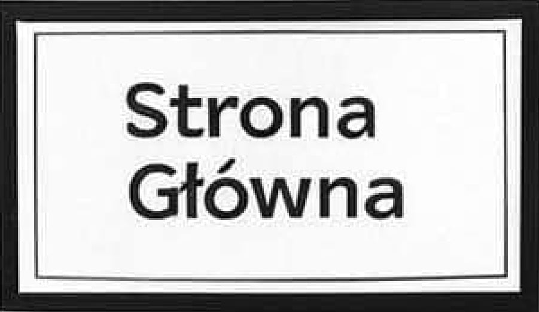
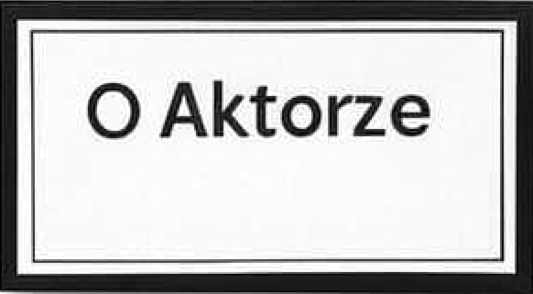
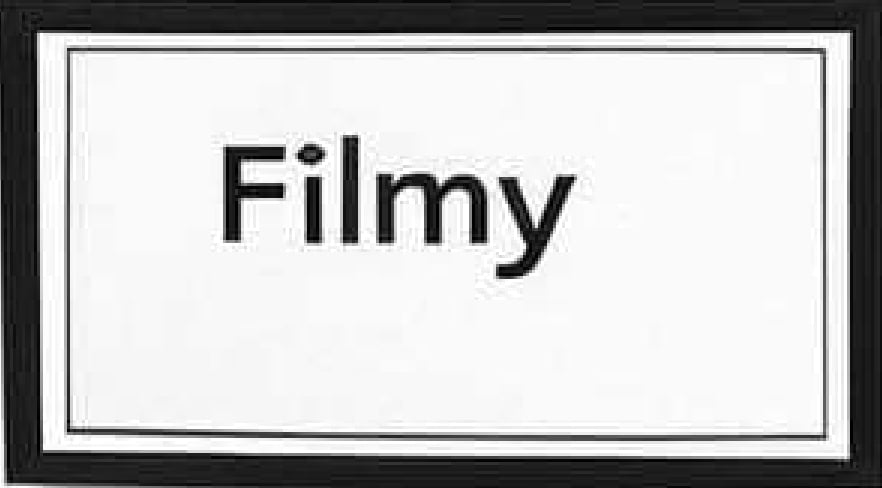
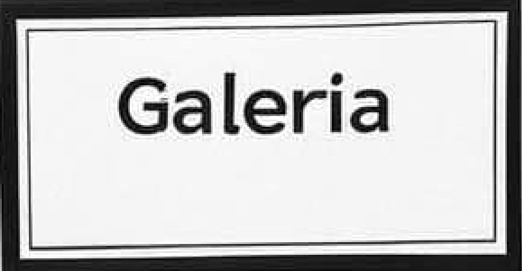
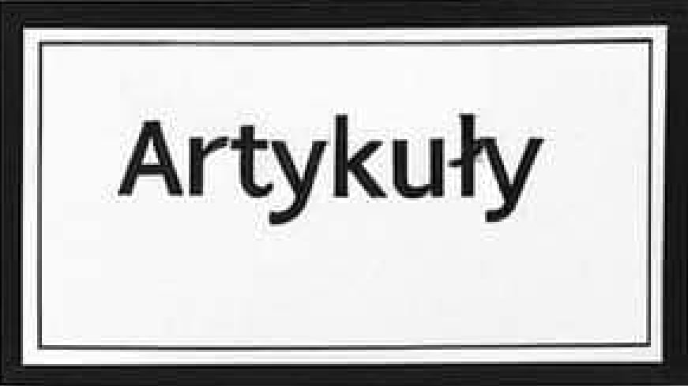
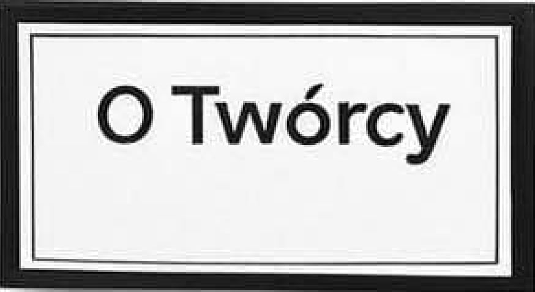

O AKTORZE
| Imię i nazwisko | Keanu Charles Reeves |
| Data i miejsce urodzenia | 02.09.1964, Bejrut, Liban |
| Rodzice | Patricia Taylor, Samuel Nowlin Reeves, Jr | Rodzeństwo | Kim Reeves, Emma Reeves, Karina Miller |





